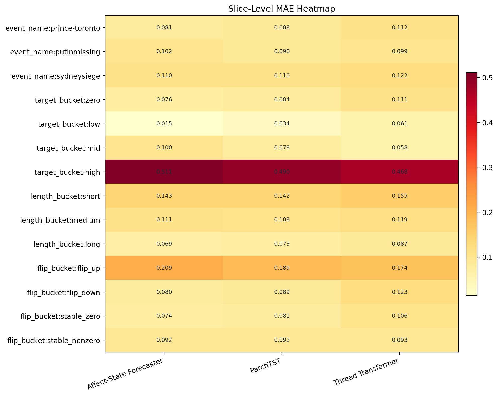
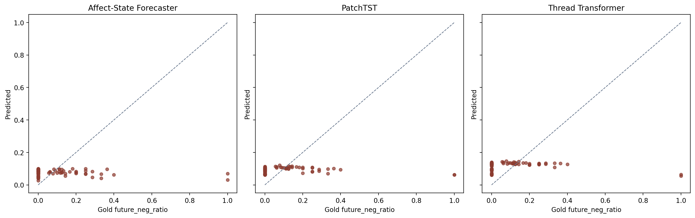
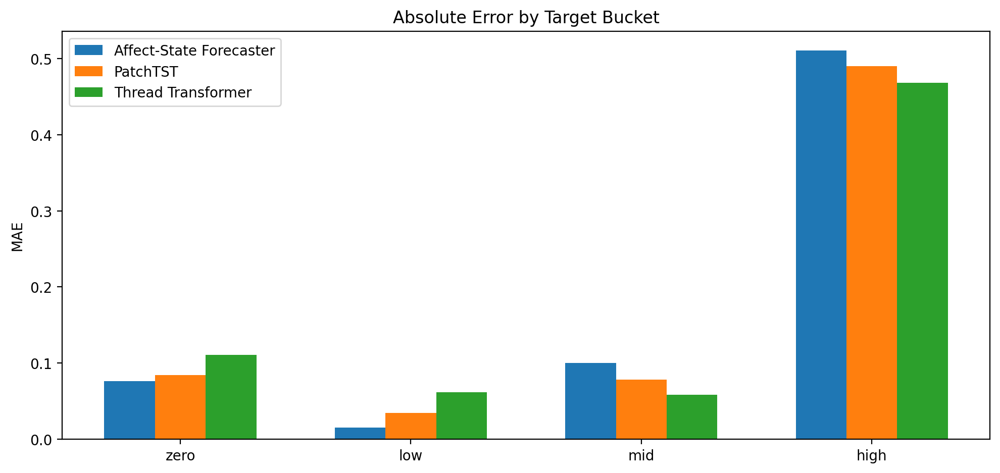
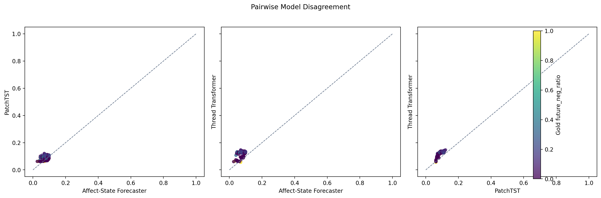

Slice-Level MAE Heatmap

本页只分析 `affect_state_forecaster`、`patchtst_baseline`、`thread_transformer_baseline`。重点解释为什么 Affect-State Forecaster 的 MAE 最优但排序弱、PatchTST 的排序最好但未明显赢下 MAE、Thread Transformer 保留局部交互后为何仍不够稳。
结论固定为：`affect_state_forecaster` 最稳，`patchtst_baseline` 排序最好，`thread_transformer_baseline` 有局部交互优势但不够稳。
| model | num_threads | mae | rmse | pearson | spearman |
|---|---|---|---|---|---|
| affect_state_forecaster | 92 | 0.1052 | 0.1745 | -0.2058 | -0.0755 |
| patchtst_baseline | 92 | 0.1055 | 0.1714 | -0.0270 | 0.3499 |
| thread_transformer_baseline | 92 | 0.1184 | 0.1773 | -0.1120 | 0.3212 |

| slice_type | slice_value | model | num_threads | mae | rmse | pearson | spearman |
|---|---|---|---|---|---|---|---|
| event_name | prince-toronto | affect_state_forecaster | 12 | 0.0810 | 0.0865 | 0.2034 | 0.2184 |
| event_name | prince-toronto | patchtst_baseline | 12 | 0.0880 | 0.0924 | 0.0120 | -0.0440 |
| event_name | prince-toronto | thread_transformer_baseline | 12 | 0.1117 | 0.1138 | 0.1933 | 0.0437 |
| event_name | putinmissing | affect_state_forecaster | 9 | 0.1019 | 0.1229 | -0.6904 | -0.6390 |
| event_name | putinmissing | patchtst_baseline | 9 | 0.0903 | 0.1101 | 0.1484 | 0.3667 |
| event_name | putinmissing | thread_transformer_baseline | 9 | 0.0987 | 0.1125 | 0.3560 | 0.5021 |
| event_name | sydneysiege | affect_state_forecaster | 71 | 0.1097 | 0.1905 | -0.2277 | -0.0783 |
| event_name | sydneysiege | patchtst_baseline | 71 | 0.1103 | 0.1873 | -0.1063 | 0.3044 |
| event_name | sydneysiege | thread_transformer_baseline | 71 | 0.1220 | 0.1922 | -0.2159 | 0.3258 |
| flip_bucket | flip_down | affect_state_forecaster | 12 | 0.0804 | 0.0821 | nan | nan |
| flip_bucket | flip_down | patchtst_baseline | 12 | 0.0886 | 0.0893 | nan | nan |
| flip_bucket | flip_down | thread_transformer_baseline | 12 | 0.1227 | 0.1235 | nan | nan |
| flip_bucket | flip_up | affect_state_forecaster | 18 | 0.2085 | 0.3457 | -0.5252 | -0.6128 |
| flip_bucket | flip_up | patchtst_baseline | 18 | 0.1894 | 0.3353 | -0.7626 | -0.7044 |
| flip_bucket | flip_up | thread_transformer_baseline | 18 | 0.1740 | 0.3287 | -0.9513 | -0.5931 |
| flip_bucket | stable_nonzero | affect_state_forecaster | 20 | 0.0923 | 0.1274 | -0.0735 | -0.0695 |
| flip_bucket | stable_nonzero | patchtst_baseline | 20 | 0.0920 | 0.1223 | -0.5075 | -0.3964 |
| flip_bucket | stable_nonzero | thread_transformer_baseline | 20 | 0.0925 | 0.1163 | -0.3374 | -0.3745 |
| flip_bucket | stable_zero | affect_state_forecaster | 42 | 0.0741 | 0.0764 | nan | nan |
| flip_bucket | stable_zero | patchtst_baseline | 42 | 0.0807 | 0.0822 | nan | nan |
| flip_bucket | stable_zero | thread_transformer_baseline | 42 | 0.1056 | 0.1086 | nan | nan |
| length_bucket | long | affect_state_forecaster | 32 | 0.0688 | 0.0847 | 0.1005 | -0.0655 |
| length_bucket | long | patchtst_baseline | 32 | 0.0735 | 0.0896 | 0.1676 | 0.2721 |
| length_bucket | long | thread_transformer_baseline | 32 | 0.0872 | 0.1024 | 0.1650 | 0.2807 |
| length_bucket | medium | affect_state_forecaster | 34 | 0.1108 | 0.1300 | -0.2720 | -0.3184 |
| length_bucket | medium | patchtst_baseline | 34 | 0.1075 | 0.1227 | 0.1793 | 0.2468 |
| length_bucket | medium | thread_transformer_baseline | 34 | 0.1195 | 0.1294 | 0.1565 | 0.1406 |
| length_bucket | short | affect_state_forecaster | 26 | 0.1427 | 0.2772 | -0.2726 | -0.3254 |
| length_bucket | short | patchtst_baseline | 26 | 0.1421 | 0.2728 | -0.2171 | -0.1297 |
| length_bucket | short | thread_transformer_baseline | 26 | 0.1553 | 0.2765 | -0.3292 | -0.1960 |
| target_bucket | high | affect_state_forecaster | 6 | 0.5108 | 0.5983 | -0.3463 | -0.0883 |
| target_bucket | high | patchtst_baseline | 6 | 0.4904 | 0.5839 | -0.7840 | -0.6568 |
| target_bucket | high | thread_transformer_baseline | 6 | 0.4684 | 0.5756 | -0.9532 | -0.7356 |
| target_bucket | low | affect_state_forecaster | 7 | 0.0152 | 0.0166 | 0.1802 | 0.0901 |
| target_bucket | low | patchtst_baseline | 7 | 0.0342 | 0.0386 | -0.3305 | -0.5586 |
| target_bucket | low | thread_transformer_baseline | 7 | 0.0613 | 0.0638 | -0.3294 | -0.3784 |
| target_bucket | mid | affect_state_forecaster | 21 | 0.0997 | 0.1191 | -0.2793 | -0.2618 |
| target_bucket | mid | patchtst_baseline | 21 | 0.0783 | 0.1028 | -0.5164 | -0.3122 |
| target_bucket | mid | thread_transformer_baseline | 21 | 0.0580 | 0.0784 | -0.3300 | -0.3076 |
| target_bucket | zero | affect_state_forecaster | 58 | 0.0761 | 0.0782 | nan | nan |
| target_bucket | zero | patchtst_baseline | 58 | 0.0841 | 0.0855 | nan | nan |
| target_bucket | zero | thread_transformer_baseline | 58 | 0.1109 | 0.1135 | nan | nan |



每个 case 固定展示 thread 基本信息、三模型预测与误差、简短文本摘录，以及按规则模板生成的自动说明。
Observed/Future: 0.000 -> 1.000
Replies: observed=1 | forecast=1
Affect: pred=0.031, err=0.969
PatchTST: pred=0.062, err=0.938
Thread Transformer: pred=0.063, err=0.937
自动说明: 均值回归失败
Source: We can see people coming out a firedoor near the Lindt cafe to waiting police. 2-3 people. Hard to see. #sydneysiege
Observed/Future: 0.000 -> 1.000
Replies: observed=1 | forecast=1
Affect: pred=0.069, err=0.931
PatchTST: pred=0.062, err=0.938
Thread Transformer: pred=0.056, err=0.944
自动说明: 三模型在稀有翻转或高噪声样本上共同失效
Source: Statement from Prime Minister Tony Abbott on Sydney hostage situation. http://t.co/MHkNRZFQWB
Observed/Future: 0.200 -> 0.400
Replies: observed=5 | forecast=5
Affect: pred=0.062, err=0.338
PatchTST: pred=0.094, err=0.306
Thread Transformer: pred=0.127, err=0.273
自动说明: 局部 reply 交互帮助了 transformer
Source: DETAILS: The hostage site is Lindt Chocolat Cafe near #Sydney Harbor http://t.co/1ZlzKDjvSf http://t.co/7u8EFUwCey
Observed/Future: 0.000 -> 0.333
Replies: observed=2 | forecast=3
Affect: pred=0.041, err=0.293
PatchTST: pred=0.070, err=0.263
Thread Transformer: pred=0.108, err=0.226
自动说明: 局部 reply 交互帮助了 transformer
Source: Coup? RT @jimgeraghty: Rumors all Russian military attaches at embassy in London have returned to Moscow: http://t.co/e8ZoFxtfHX
Observed/Future: 0.100 -> 0.364
Replies: observed=10 | forecast=11
Affect: pred=0.096, err=0.267
PatchTST: pred=0.101, err=0.263
Thread Transformer: pred=0.132, err=0.232
自动说明: 局部 reply 交互帮助了 transformer
Source: Reports on @channeltennews #sydneysiege gunman wants #ISIL flag delivered to cafe and he also wants to speak to PM or people will be killed.
Observed/Future: 0.000 -> 0.333
Replies: observed=6 | forecast=6
Affect: pred=0.066, err=0.267
PatchTST: pred=0.098, err=0.235
Thread Transformer: pred=0.134, err=0.199
自动说明: 均值回归失败
Source: We understand there are two gunmen and up to a dozen hostages inside the cafe under siege at Sydney.. ISIS flags remain on display #7News
Observed/Future: 0.000 -> 0.286
Replies: observed=7 | forecast=7
Affect: pred=0.047, err=0.238
PatchTST: pred=0.095, err=0.191
Thread Transformer: pred=0.133, err=0.152
自动说明: 均值回归失败
Source: ISIS -holding a Cafe hostage in Sydney- forcing Hostages to press ISIS flags against the Windows #DramaAlert HOT! http://t.co/XwXLvvWc76
Observed/Future: 0.143 -> 0.286
Replies: observed=7 | forecast=7
Affect: pred=0.082, err=0.203
PatchTST: pred=0.086, err=0.200
Thread Transformer: pred=0.128, err=0.158
自动说明: 局部 reply 交互帮助了 transformer
Source: UPDATE: Hostages fleeing #Sydney cafe held by Iranian gunman as explosions, gunshots are heard: http://t.co/WrPVZSJHlX
Observed/Future: 0.000 -> 0.250
Replies: observed=4 | forecast=4
Affect: pred=0.067, err=0.183
PatchTST: pred=0.082, err=0.168
Thread Transformer: pred=0.127, err=0.123
自动说明: 局部 reply 交互帮助了 transformer
Source: Local media: 3 people appear to escape from Martin Place, Sydney, café, amid hostage situation - @ABCNews http://t.co/N5mmnilz4Z
Observed/Future: 0.000 -> 0.250
Replies: observed=4 | forecast=4
Affect: pred=0.087, err=0.163
PatchTST: pred=0.081, err=0.169
Thread Transformer: pred=0.126, err=0.124
自动说明: 局部 reply 交互帮助了 transformer
Source: OMG. #Prince rumoured to be performing in Toronto today. Exciting!
Observed/Future: 0.000 -> 0.000
Replies: observed=7 | forecast=7
Affect: pred=0.045, err=0.045
PatchTST: pred=0.101, err=0.101
Thread Transformer: pred=0.128, err=0.128
自动说明: 局部模式存在，但三模型对未来负面比例的刻画方式不同
Source: PRINCE IN TORONTO TONIGHT: @3RDEYEGIRL tweeted this morning to say OTNOROT CALLING, which is Toronto backwards, obviously.... Seems it's on!
Observed/Future: 0.000 -> 0.143
Replies: observed=7 | forecast=7
Affect: pred=0.055, err=0.088
PatchTST: pred=0.107, err=0.035
Thread Transformer: pred=0.127, err=0.016
自动说明: 均值回归失败
Source: Unformed Russian Embassy staff in London have left for Russia Rumours Putin HAS DIED! http://t.co/zSIV8w6FJ2 via @ShaunyNews #PutinDead?
Observed/Future: 0.000 -> 0.286
Replies: observed=7 | forecast=7
Affect: pred=0.047, err=0.238
PatchTST: pred=0.095, err=0.191
Thread Transformer: pred=0.133, err=0.152
自动说明: 均值回归失败
Source: ISIS -holding a Cafe hostage in Sydney- forcing Hostages to press ISIS flags against the Windows #DramaAlert HOT! http://t.co/XwXLvvWc76
Observed/Future: 0.250 -> 0.000
Replies: observed=4 | forecast=4
Affect: pred=0.045, err=0.045
PatchTST: pred=0.091, err=0.091
Thread Transformer: pred=0.121, err=0.121
自动说明: 局部模式存在，但三模型对未来负面比例的刻画方式不同
Source: #BREAKING: Hostages are being held and a siege is taking place at Sydney's Lindt Chocolat Cafe in Martin Place.
Observed/Future: 0.000 -> 0.143
Replies: observed=20 | forecast=21
Affect: pred=0.070, err=0.073
PatchTST: pred=0.115, err=0.027
Thread Transformer: pred=0.144, err=0.001
自动说明: 均值回归失败
Source: Several people being held hostage at a Sydney cafe. Australian tv showing people with hands up against a window: http://t.co/AD2PR4OPFq
Observed/Future: 0.286 -> 0.000
Replies: observed=7 | forecast=7
Affect: pred=0.056, err=0.056
PatchTST: pred=0.097, err=0.097
Thread Transformer: pred=0.131, err=0.131
自动说明: 局部模式存在，但三模型对未来负面比例的刻画方式不同
Source: Hostages in Sydney cafe made to hold up Islamic flags http://t.co/I1PsUPekkB
Observed/Future: 0.056 -> 0.056
Replies: observed=18 | forecast=18
Affect: pred=0.073, err=0.018
PatchTST: pred=0.114, err=0.059
Thread Transformer: pred=0.143, err=0.088
自动说明: 局部模式存在，但三模型对未来负面比例的刻画方式不同
Source: #SYDNEYSIEGE: Hostage-takers ‘have suicide belts, demand radio convo with #Abbott’ – report http://t.co/1ZlzKDjvSf http://t.co/7Jej7i4SlO
Observed/Future: 0.000 -> 0.125
Replies: observed=15 | forecast=16
Affect: pred=0.075, err=0.050
PatchTST: pred=0.115, err=0.010
Thread Transformer: pred=0.138, err=0.013
自动说明: 均值回归失败
Source: NSW Police confirm 5 hostages have emerged from #sydneysiege and they are negotiating: "It might take a bit of time" http://t.co/le9r9REzdR
Observed/Future: 0.000 -> 0.250
Replies: observed=8 | forecast=8
Affect: pred=0.069, err=0.181
PatchTST: pred=0.108, err=0.142
Thread Transformer: pred=0.133, err=0.117
自动说明: 均值回归失败
Source: US evacuated Consulate in Sydney after #sydneysiege. Emergency warning to U.S. citizens urging them to "maintain high level of vigilance".
Observed/Future: 0.000 -> 0.000
Replies: observed=9 | forecast=9
Affect: pred=0.069, err=0.069
PatchTST: pred=0.107, err=0.107
Thread Transformer: pred=0.133, err=0.133
自动说明: 局部模式存在，但三模型对未来负面比例的刻画方式不同
Source: Black Islamic flag being held up in window of #lindt chocolate store in Martin Place, Sydney - hostages inside. http://t.co/fAV7PEuY6P
没有符合当前阈值的样本。
Observed/Future: 0.000 -> 1.000
Replies: observed=1 | forecast=1
Affect: pred=0.031, err=0.969
PatchTST: pred=0.062, err=0.938
Thread Transformer: pred=0.063, err=0.937
自动说明: 均值回归失败
Source: We can see people coming out a firedoor near the Lindt cafe to waiting police. 2-3 people. Hard to see. #sydneysiege
Observed/Future: 0.000 -> 1.000
Replies: observed=1 | forecast=1
Affect: pred=0.069, err=0.931
PatchTST: pred=0.062, err=0.938
Thread Transformer: pred=0.056, err=0.944
自动说明: 三模型在稀有翻转或高噪声样本上共同失效
Source: Statement from Prime Minister Tony Abbott on Sydney hostage situation. http://t.co/MHkNRZFQWB
Observed/Future: 0.000 -> 0.333
Replies: observed=2 | forecast=3
Affect: pred=0.041, err=0.293
PatchTST: pred=0.070, err=0.263
Thread Transformer: pred=0.108, err=0.226
自动说明: 局部 reply 交互帮助了 transformer
Source: Coup? RT @jimgeraghty: Rumors all Russian military attaches at embassy in London have returned to Moscow: http://t.co/e8ZoFxtfHX
Observed/Future: 0.000 -> 0.333
Replies: observed=6 | forecast=6
Affect: pred=0.066, err=0.267
PatchTST: pred=0.098, err=0.235
Thread Transformer: pred=0.134, err=0.199
自动说明: 均值回归失败
Source: We understand there are two gunmen and up to a dozen hostages inside the cafe under siege at Sydney.. ISIS flags remain on display #7News
Observed/Future: 0.000 -> 0.286
Replies: observed=7 | forecast=7
Affect: pred=0.047, err=0.238
PatchTST: pred=0.095, err=0.191
Thread Transformer: pred=0.133, err=0.152
自动说明: 均值回归失败
Source: ISIS -holding a Cafe hostage in Sydney- forcing Hostages to press ISIS flags against the Windows #DramaAlert HOT! http://t.co/XwXLvvWc76
Observed/Future: 0.000 -> 0.250
Replies: observed=4 | forecast=4
Affect: pred=0.067, err=0.183
PatchTST: pred=0.082, err=0.168
Thread Transformer: pred=0.127, err=0.123
自动说明: 局部 reply 交互帮助了 transformer
Source: Local media: 3 people appear to escape from Martin Place, Sydney, café, amid hostage situation - @ABCNews http://t.co/N5mmnilz4Z
Observed/Future: 0.000 -> 0.250
Replies: observed=4 | forecast=4
Affect: pred=0.087, err=0.163
PatchTST: pred=0.081, err=0.169
Thread Transformer: pred=0.126, err=0.124
自动说明: 局部 reply 交互帮助了 transformer
Source: OMG. #Prince rumoured to be performing in Toronto today. Exciting!
Observed/Future: 0.000 -> 0.250
Replies: observed=8 | forecast=8
Affect: pred=0.069, err=0.181
PatchTST: pred=0.108, err=0.142
Thread Transformer: pred=0.133, err=0.117
自动说明: 均值回归失败
Source: US evacuated Consulate in Sydney after #sydneysiege. Emergency warning to U.S. citizens urging them to "maintain high level of vigilance".
Observed/Future: 0.000 -> 0.200
Replies: observed=4 | forecast=5
Affect: pred=0.083, err=0.117
PatchTST: pred=0.072, err=0.128
Thread Transformer: pred=0.122, err=0.078
自动说明: 局部 reply 交互帮助了 transformer
Source: UPDATE: Total of 5 people have been able to get out of Sydney cafe during hostage situation: http://t.co/mp18E4DdjW http://t.co/n5vhI5DsZg
Observed/Future: 0.000 -> 0.182
Replies: observed=10 | forecast=11
Affect: pred=0.100, err=0.082
PatchTST: pred=0.108, err=0.074
Thread Transformer: pred=0.135, err=0.047
自动说明: 局部模式存在，但三模型对未来负面比例的刻画方式不同
Source: Uber says it has hiked prices in Sydney to "encourage more drivers to come online & pick up passengers." http://t.co/MCJ0rMSXPc #SydneySiege
Affect-State Forecaster: 多模态压缩和去噪适合偏斜分布，但对 `flip_up` 和高负面稀有样本容易过度平滑。
PatchTST: 对趋势和相对顺序最敏感，但在需要关键语义线索或单条 reply 触发时会漏掉决定性证据。
Thread Transformer: 能利用局部 reply 与结构细节，但在小样本、短线程、弱标注噪声下更不稳。